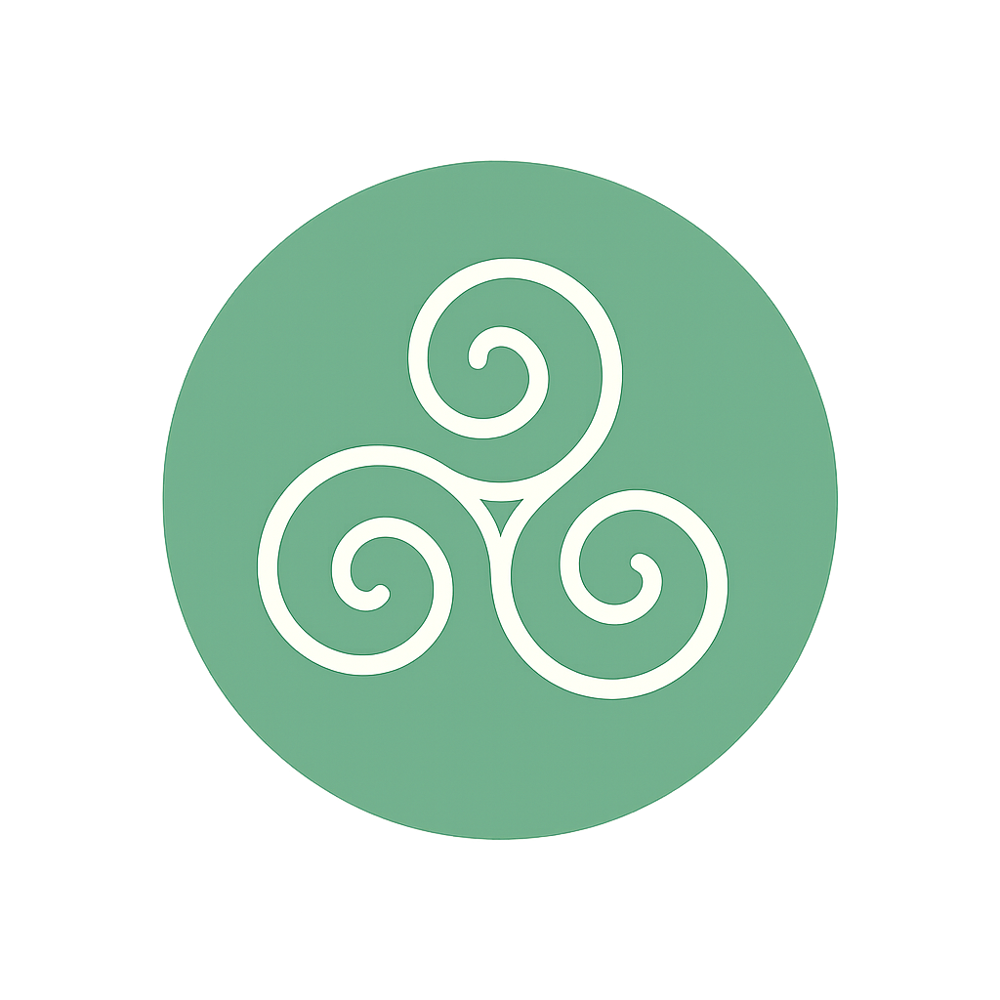

Setanta Hypnotherapy
365 Daily Cards for Healing and Growth
“
Loading…
”
CARD 1 OF 365
◀ Previous
☀ Today’s Card
✨ Random Card
Next ▶
Tip:
Use
?mode=day
or
?mode=random
at the end of the link.
Example:
?mode=day
shows today’s card first.
// Style Header Logo // Replace styles with cleaned version